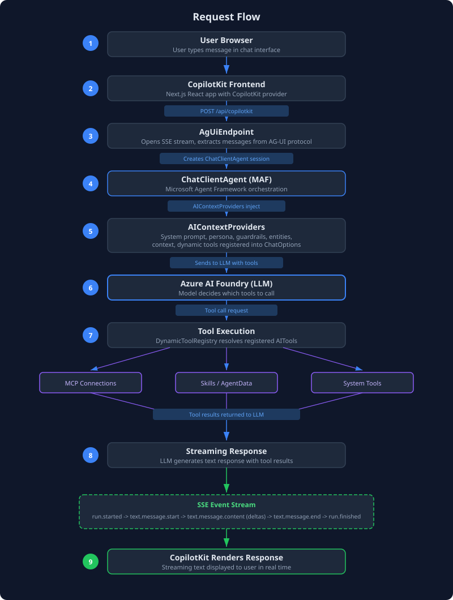
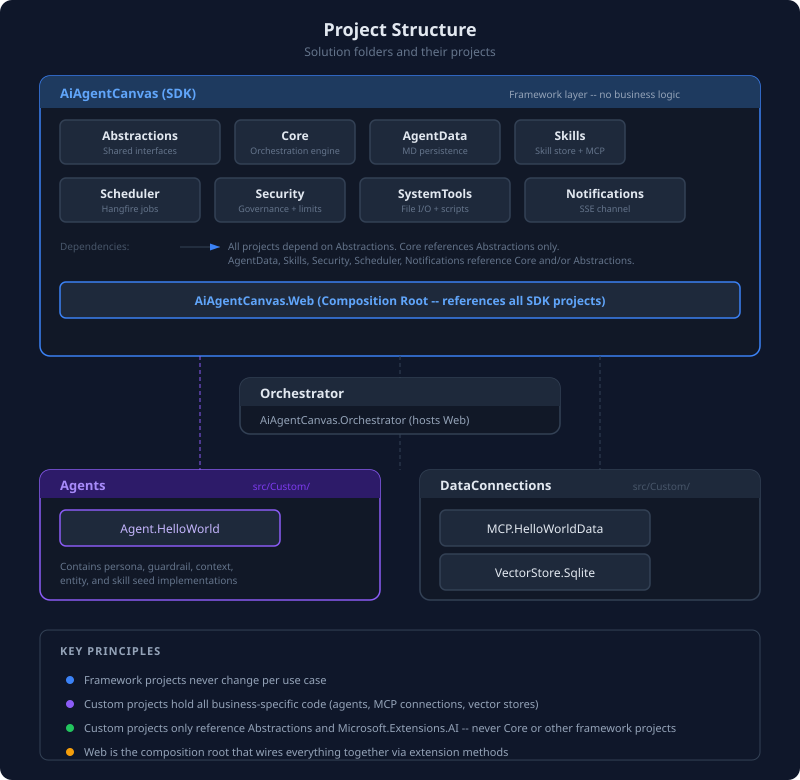
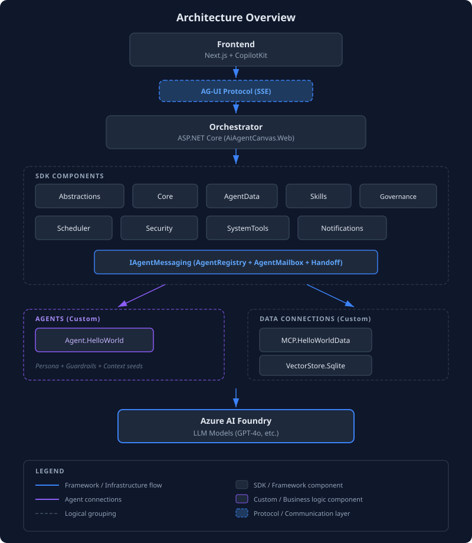

Architecture Overview
AI Agent Canvas is a .NET 9 multi-agent copilot framework built on Microsoft's Agent Framework (MAF) and Microsoft.Extensions.AI. It connects a CopilotKit frontend to Azure AI Foundry models through an AG-UI Server-Sent Events protocol, with dynamic tool registration, governance, and markdown-persisted agent data.
Request Flow

Framework vs Custom Separation
The solution enforces a strict boundary between framework code and business logic.
Framework projects (under src/AiAgentCanvas.*) provide the engine: orchestration, tool registry, agent data persistence, skills management, security, scheduling, and notifications. These never change per use case.
Custom projects (under src/Agents/ and src/DataConnections/) hold all business-specific code: agent prompts, MCP data connections, custom vector stores. You add your own projects here without modifying any framework code.

Dependency Flow
All projects depend downward toward Abstractions. The Orchestrator is the only project that references everything.

Key dependency rules:
- Abstractions has zero project references. It defines
MarkdownFile,DocumentRecord,INotificationSink,IToolGovernanceWrapper, and the seed interfaces (IPersonaSeed,IGuardrailSeed,IWorkflowSeed,IContextSeed,IEntitySeed,IGoalSeed,ISkillSeed,IMcpConnectionSeed,IToolDependencySeed). - Core references Abstractions. It provides
IChatClientregistration,DynamicToolRegistry,AIContextProviderbase, tool governance wiring, the AG-UI endpoint, and inter-agent communication (AgentRegistry,AgentMailbox, handoff tools). - AgentData, Skills, Security, Scheduler, Notifications each reference Core and/or Abstractions. AgentData also includes the Goals domain with a SQLite-backed work queue.
- Agent projects reference
Abstractions(for seed interfaces) -- they never reference Core, AgentData, or any other framework project. - DataConnection projects reference
Microsoft.Extensions.AI(for tool definitions) -- they are independent of the SDK. - Orchestrator references everything and wires it together in
Program.cs.
Key Packages
| Package | Version | Purpose |
|---|---|---|
| Microsoft.Agents.AI | 1.10.0 | ChatClientAgent, AIContextProvider, AIAgent |
| Microsoft.Extensions.AI | 10.7.0 | IChatClient, AITool, AIFunctionFactory, ChatOptions |
| ModelContextProtocol | 1.4.0 | McpClient, HttpClientTransport for MCP servers |
| Microsoft.AgentGovernance | 4.0.0 | GovernanceKernel, PolicyEngine, InjectionDetector |
| Azure.AI.OpenAI | 2.3.0-beta.1 | AzureOpenAIClient for Azure AI Foundry |
| Hangfire | 1.8.23 | Background job scheduling with SQLite storage |
Extension Method Pattern
Every project exposes its DI registration through *ServiceExtensions.cs files with Add*() methods and optionally Use*() methods for middleware:
// Each project follows this pattern:
builder.Services.AddAiAgentCanvasSecurity(builder.Configuration); // Security first
builder.Services.AddAiAgentCanvas(builder.Configuration, options => { ... }); // Core
builder.Services.AddMarketDataTools(); // Custom tools
builder.Services.AddAiAgentCanvasNotifications();
builder.Services.AddAiAgentCanvasScheduler();
// ... more domain registrations
app.UseAiAgentCanvasSecurity(); // Security middleware
app.UseAiAgentCanvas(); // CORS + AG-UI endpoint + health check
app.MapNotificationEndpoints(); // SSE notification streamTools are registered as IReadOnlyList<AITool> singleton services. The Core framework collects all registered IReadOnlyList<AITool> services at startup and passes them to the ChatClientAgent via ChatOptions.Tools. Additionally, DynamicToolRegistry allows runtime tool registration (used by MCP connections).
Inter-Agent Communication
AI Agent Canvas supports multi-agent collaboration through three mechanisms registered via AddAiAgentCanvasInterAgentCommunication() in Core:
- Agent Registry -- Builds and caches named
ChatClientAgentinstances from persona definitions. Each persona becomes a resolvable agent with its own instructions. Tools:list_available_agents,get_agent_info. - Agent Mailbox -- SQLite-backed per-agent message queue (
agentmailbox.db) for asynchronous communication between agents. Tools:send_to_agent,check_inbox,reply_to_message. - Handoff -- Synchronous delegation: one agent calls
handoff_to_agentto run a target agent and get the result back in the same turn.
Autonomous Execution
The Scheduler project includes an autonomous execution mode built on Hangfire. When enabled, a recurring AutonomousAgentJob polls the work queue for pending items, claims and executes them via AIAgent.RunAsync, and falls back to picking the next active goal when the queue is empty. Goals and work items are managed through the AgentData Goals domain.
Tools: start_autonomous_mode, stop_autonomous_mode, get_autonomous_status (on the Scheduler), plus create_goal, list_goals, submit_work_item, etc. (on AgentData).
Next Steps
- Project Structure -- detailed breakdown of every project
- Core Framework -- how orchestration, tools, and context work
- Agent Data -- the 6 markdown-persisted data domains
- Skills and MCP -- skill management and MCP connections
- Security -- governance policies and rate limiting
- Adding Custom Agents -- build your own agent
- Adding Custom MCP Connections -- add data sources